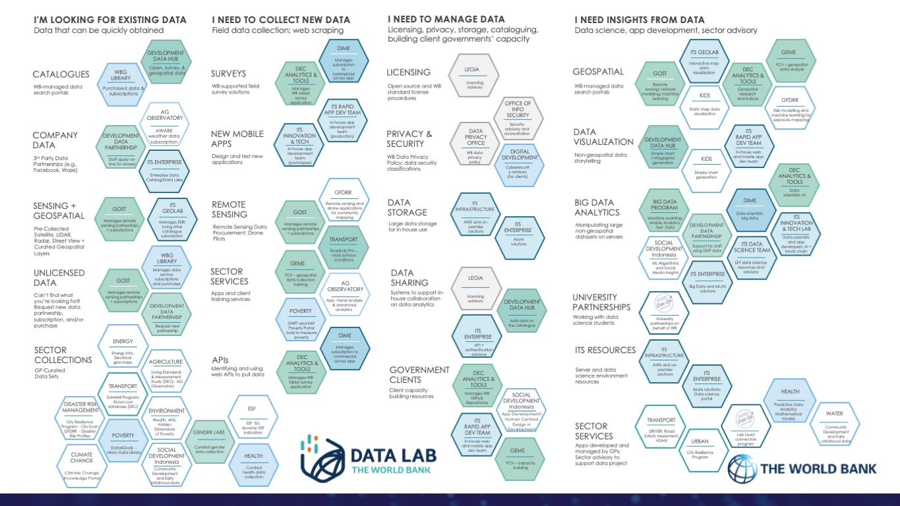

Resources
The resources map link Bank staff and clients to the best data for decision making, help staff and government clients responsibly manage them, and generate and share insights from these data
World Bank’s first comprehensive mapping effort for data and geospatial resources.
Solutions for governments that combine the best of World Bank economics, data science, geospatial, data engineering, IT, domain expertise, and policy resources are difficult to realize, because the necessary combined resources are scattered throughout the organization, as illustrated in this operations-focused data services map.
The resources map link Bank staff and clients to the best data for decision making, help staff and government clients responsibly manage them, and generate and share insights from these data
Through the Lab Leads program, Directors and Managers have nominated focal points to facilitate building connections between their teams and the resources they need for data-driven project work. The World Bank Lab Leads represent teams from SD, INFRA, HD, SD, DEC, ITS, MENA, ECA, and EAP.
In case you would like to update your team information, please click here to edit in the spreadsheet
Ag Observatory provides near real-time and high-resolution agricultural weather information that allows the World Bank Group (WBG) to proactively monitor agricultural production systems globally.
Erick Fernandes
efernandes@worldbank.org
Build high resolution data products through(1) Predictive analytics (2) Data fusion of traditional and new data sources (3) Capacity development to use and sustain modern data products in operations and country systems
Trevor Monroe
tmonroe@worldbankgroup.org
bigdata/
CRP catalyzes a shift from a primarily siloed, single-stream city-level resilience operations approach to longer term, more comprehensive, multi-disciplinary packages of technical and financial services, building the pipeline for viable projects at the city level that build resilient cities with the capacity to plan for and mitigate adverse impacts of disasters and climate change, thus enabling them to save lives, reduce losses, and unlock economic and social potential.
Steven Rubinyi
srubinyi@worldbank.org
CRP Webpage
Analysis and Operations related to the Banks climate corporate commitments
Support the mainstreaming of climate change data and information to inform WBG development operations and the enhancement of climate services for climate risk screening and climate smart planning.
Connect Bank staff to private sector data in an efficient, secure, and responsible manner.
The Data Management and Services team manages all development data within the WBG and provides assistance on all aspects of data wrangling to project teams and units. We can help with data visualization, storytelling and dissemination strategies as well as data storage, access and manipulation.
Rochelle O'Hagan
rohagan@worldbank.org
data@worldbank.org
Development Data Group
DIME Analytics supports quality research processes across the DIME portfolio, offers public trainings, and develops tools for the global community of development researchers.
Disruptive Knowledge, Information, and Data Services (KIDS) Helpdesk is intended to support the use of disruptive technology (particularly related to modern information and analytical aspects) in ENB GP operational and ASA activities.
Nagaraja Rao Harshadeep and Shun Chonabayashi
harsh@worldbank.org, schonabayashi@worldbank.org
KIDS
ESF team helps different GPs in implementing the framework to their respective projects.
Min Jung Kwon
mkwon@worldbank.org
ESF_ISU_Group@worldbankgroup.org
ESF ISU Group
Build capacity among clients, partners and Bank staff to use simple and cost-free open source tools for digital data collection and analysis, to enhance M&E, supervision and real-time risk management
Bernhard Metz
bmetz@worldbank.org
gems-team@worldbank.org
GEMS
GFDRR Labs tests and applies promising new solutions from across the world to tackle disaster and climate risks.
Emma Phillips
ephillips@worldbank.org
GFDRR_Labs@worldbank.org
GFDRR
Bring geospatial insight to WB lending. Support lending operations and country offices in acquiring, processing, and extracting insights from geospatial data.
Andres Chamorro
achamorroelizond@worldbank.org
gost@worldbank.org
GOST
Health GP Global Solutions Group work on data and decision science across the GP.
Marelize Gorgens
mgorgens@worldbank.org
ITS Enterprise offers tools and platforms for data storage, data processing, ML model development and deployment, data security, and data distribution. ITSDT also develops and deploys ML/AI solutions and offers technical advisory and collaboration on big data and ML/AI focused projects
Offer a full spectrum of geospatial solutions especially application development
Jong Hyun Lee
jlee2@worldbankgroup.org
geocenter@worldbank.org
ITS GeoLab
Explore different technologies that could lead to or leverage different types of data and educate Bank staff on emerging technologies
Rachel Alexandra Halsema
rhalsema@worldbankgroup.org
technologyinnovation@worldbankgroup.org
itsinnovation/
Provide World Bank Group staff and the global community with access to relevant information, development solutions and services to reflect history, foster knowledge, transparency and accountability.
Offer end-to-end services for clients, whether internal or external, that are conducting surveys
James Arthur Shaw
jshaw@worldbank.org
lsms@worldbank.org
LSMS
Provide access to data and indicators for single- and cross-country analysis of poverty, shared prosperity, and other development issues in the EAP region, while helping to strengthen institutional memory
Indonesia Social Development team focuses on harnessing community empowerment principles to improve economic inclusion and frontline service delivery in Indonesia.
Dewi Susanti
dsusanti@worldbank.org
Social Development Indonesia
Transport GP team brings solutions to improve transport connectivity to foster social and economic development, from boosting economic growth and competitiveness to promoting inclusion by connecting people to schools, hospitals and job opportunities.
The Water GP's mission is a water secure world for all, and centers around three interrelated pillars: (1) sustain water resources, (2) deliver services, and (3) build resilience
Esha Zaveri, Chloe Oliver Viola
ezaveri@worldbank.org
cviola@worldbank.org
askwater@worldbank.org
Water GP
Data that can be quickly obtained
WB-managed data search portals
3rd Party Data Partnerships
Pre-Collected Satellite, LIDAR, Radar, Street View + Curated Geospatial Layers
Can’t find what you’re looking for? Request new data partnership, subscription, and/or purchase
GP-Curated Datasets
Field data collection; web scraping
WB-supported field survey solutions
WB Data Privacy Policy; data security classifications
Remote Sensing Data Procurement; Drone Pilots
Apps and client training services
Identifying and using web APIs to pull data
Licensing, privacy, storage, cataloguing, building client governments’ capacity
Open source and WB standard license procedures
WB Data Privacy Policy; data security classifications
Large data storage for in-house use
Systems to support in-house collaboration on data analytics
Client capacity building resources
With acquired data and sufficient data management procedures and infrastructure in place, how do we responsibly generate and share insights from these data? This category includes economics and statistical analysis, data science (AI/ML), app development, geospatial analytics, code collaboration best practices, reproducible code best practices, data product licensing, etc.
WB-managed data search portals
Non-geospatial data storytelling
Manipulating large non-geospatial datasets on servers
Working with data science students
Server and data science environment resources
Apps developed and managed by GPs; Sector advisory to support data project
With acquired data and sufficient data management procedures and infrastructure in place, how do we responsibly generate and share insights from these data? This category includes economics and statistical analysis, data science (AI/ML), app development, geospatial analytics, code collaboration best practices, reproducible code best practices, data product licensing, etc.
WB-managed data search portals
Non-geospatial data storytelling
Manipulating large non-geospatial datasets on servers
Working with data science students
Server and data science environment resources
Apps developed and managed by GPs; Sector advisory to support data project